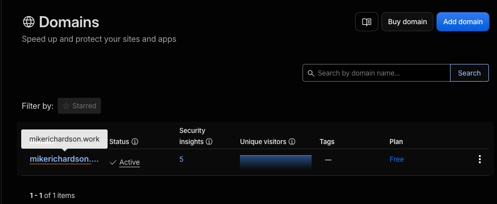
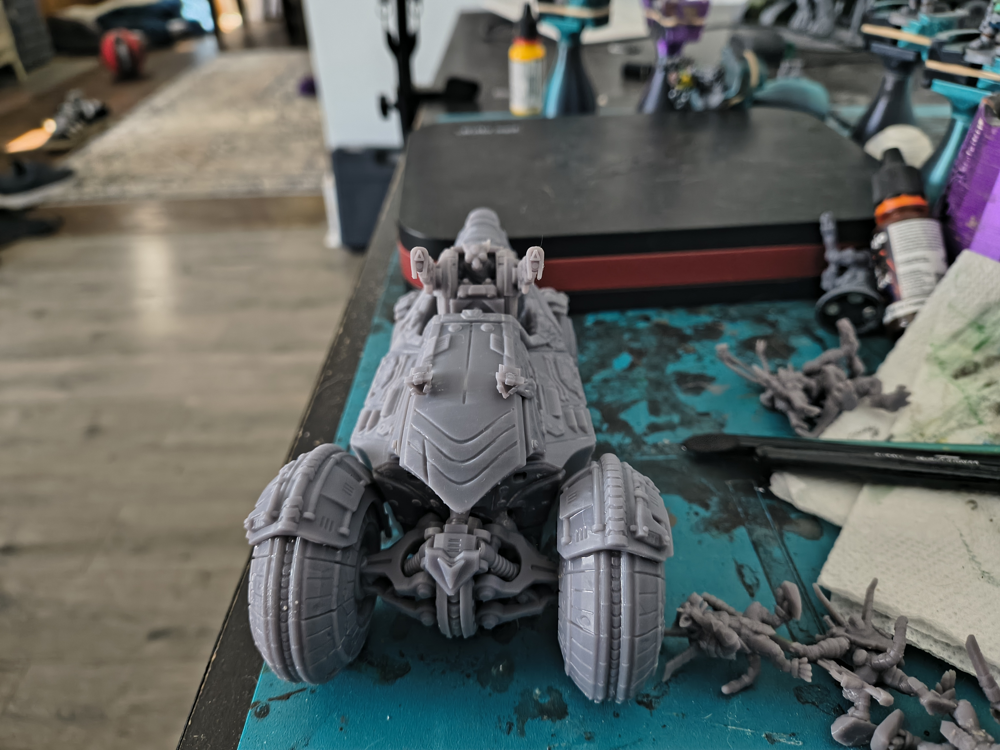
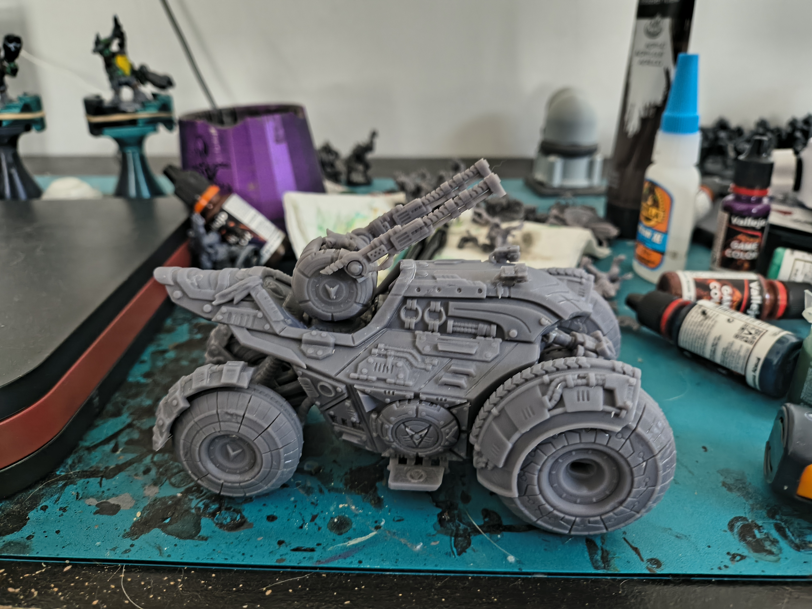

Captains Log

July 1st 2026
Buying My Domain

I was working on my blog, or the captains log, recently and a friend asked me about my blog. I explained to him that I had the site hosted on infinity.io; but the work firewall blocked it, as it see's the site as "malware". He brought up a good question which I didn't really have an answer for, and that was why didn't I just buy my own domain.
What drew me to infinity.io was that it was free, and that I could manually upload my webpages myself. I want to make and maintain this site for a few reasons.
- Make a daily habit for writing
- Build my web-dev skills and learn more about it
- Have a location to post my resume online
Additionally a lot of sites that allow hosting push you to use things like wordpress or their own site building software. That may be great for a person or company that just need a quick way of making an online space, but again that's not what I want. I want to get upset and angry as I try to figure out how to make certain things work.
I ended up purchasing the domain mikerichardson.work. This isn't the same as purchasing the domain mikerichardson.com; but I still feel like it's a step forward in the right direction. I ended up using CloudFlare to purchase the domain. Which was John's suggestion, but I also did some research and it came up commonly as a good site to purchase domains from.
The bad news is that, at least for me (someone who is not experienced with CloudFlare), is that the CloudFlare site is less than intuitive. I spent somewhere like 2 hours trying to figure out how to make my domain manageable and maintainable via CloudFlares site. I figured it out, but I have to utilize GitHub to make it work, which seems to be their preferred method. I liked that infinity.io just allowed me to upload the files directly to the server and boom, it worked. That may be an option in CloudFlare, but I couldn't find a way to do it that didn't make a whole new site with a whole new .dev domain.
When I'm less frustrated I will circle back and see if I can figure it out. For now though, this is working.
OPR Ratman Clans Prints
I started printing mini figures for One Page Rules (OPR). I played Ratmen and while I wasn't super successful with them, but I liked their look a lot. In addition you could upgrade them with certain weapons and things that my friend who I play with thought was cheap and skewed. He always won, so I'm not sure what he was complaining about, but him not liking them only reinforced to me that they were pretty sweet!
What you see here is a Ratman Clans Burrow Tank. I think it turned out really well. It had to be printed in several pieces with the front end being one piece, the body being another large pieces, and then 3 other smaller pieces that included the cockpit, guns, and head.

